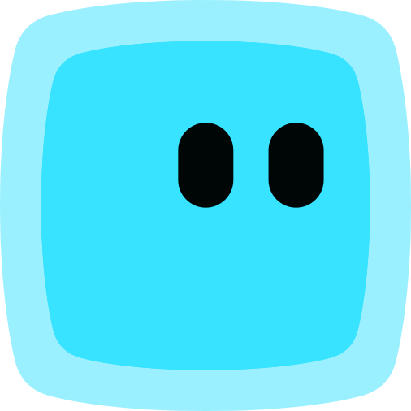

IA comercial com visual premium, direto e vivo.
Um guia visual para manter landing pages, popups, CTAs, materiais comerciais e novas interfaces com a mesma linguagem do site Tlin.
Cores
Base preta/branca, neutros zinc e assinatura em gradiente lilas + azul.
Tipografia
DM Sans com peso alto, tracking apertado e contraste claro entre titulos de impacto e corpo de leitura.
Componentes
Padroes visuais mais usados no site: CTAs, cards e superficies de interface.
Cards claros sao limpos, com borda zinc e pouco ou nenhum shadow.
Mascote
O mascote TlinIA e usado como sinal de IA ativa: ele guia a atencao sem competir com textos, botoes ou formularios.

Logica do mascote
- Na hero, nasce como cursor de digitacao e fica preso ao ultimo caractere revelado.
- No desktop, depois da animacao, acompanha o mouse com spring suave e rotacao direcional.
- Quando passa por botoes, links ou elementos com `data-mascot-hide`, ele reduz escala/opacidade para nao atrapalhar clique ou leitura.
- No mobile, o movimento deve ser curto, leve e sem seguir toque para economizar CPU/GPU.
- Evitar uso decorativo solto: o mascote sempre representa presenca, guia ou estado da IA.
Chat
O chat da Tlin deve parecer leve, direto e inteligente: uma janela clara para conversa com IA, com foco no input e nas respostas.
Design do chat da Lia
- A superficie principal e branca, com borda em gradiente e cantos grandes para parecer assistiva, nao tecnica.
- O header e compacto: avatar limpo, nome da Lia e estado de disponibilidade com pouca interferencia visual.
- As mensagens da IA usam branco e borda neutra; as mensagens do usuario usam o gradiente Tlin como assinatura.
- O estado inicial valoriza o input grande e a chamada "Pergunte qualquer coisa"; depois da primeira mensagem, a interface fica mais compacta.
- Os baloes nao usam sombra. A separacao vem de espacamento, contraste e cor.
Design da qualificacao
- O fluxo de qualificacao usa fundo escuro para criar foco e diferenciar de uma conversa aberta.
- A pergunta ocupa o protagonismo, com tipografia grande e poucas opcoes por tela.
- As opcoes precisam parecer botoes de resposta rapida, com area clicavel generosa.
- O scroll interno deve ser discreto, escuro e funcional, sem chamar atencao.
- No mobile, a composicao precisa acompanhar teclado e altura visivel para manter o campo ativo acessivel.
Regras finais
Checklist rapido para qualquer nova tela ou componente.
Fazer
- Usar DM Sans e pesos fortes.
- Reservar gradiente para destaque real.
- Manter CTAs em pill com borda/hover de marca.
- Otimizar imagens pequenas.
- Respeitar safe area em mobile.
Evitar
- Novos blobs/orbs decorativos sem funcao.
- Sombras pesadas em cards simples.
- Backdrops blur pesados no mobile.
- Texto explicando a interface dentro da UI.
- Arquivos gigantes em avatares pequenos.